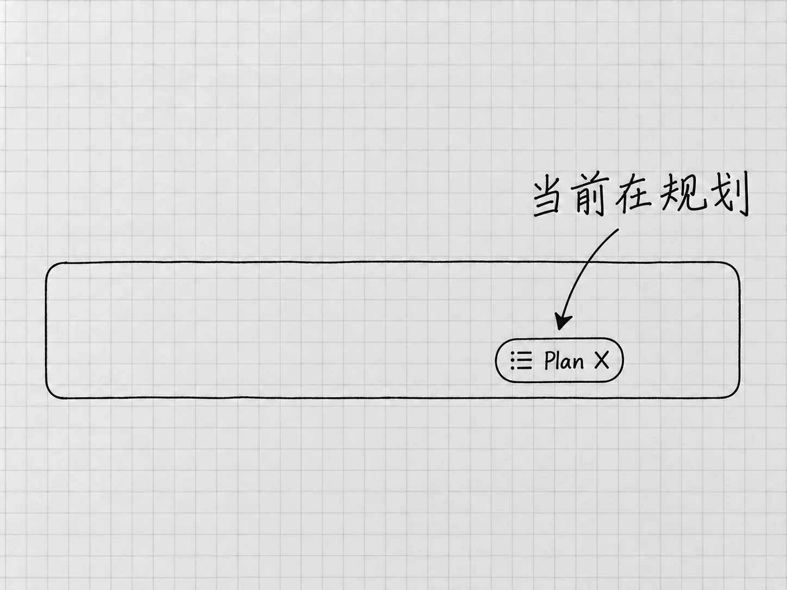

第15章 先商量怎么做：Plan与方案比较
已经知道把哪一项改成什么，直接提出修改要求就可以。另一种情况是目标清楚，做法还没有定。比如你希望清单更方便每天查看，却拿不准应该按状态、日期还是原有事项排序。
这时先把方案谈明白，可以少走一轮无用的修改。Codex中的 Plan，规划模式，就是让它先调查情况、提出做法，再进入实际修改的入口。
先确认计划针对哪份材料

图：输入区的Plan标记帮助你确认当前处于规划模式。切换后先核对模式，再说清这轮只讨论还是开始执行。
回到「我的待办」项目，打开准备继续的任务。确认当前版本是「结果/待办清单-v2.txt」，两份原始备忘仍可读取。当前版本要在讨论前说定，免得它把v1当成现状。
在输入区键入/，选择 /plan，查看当前任务的模式提示，确认已经进入规划。官方将它定义为切换规划模式的命令；在多步任务中，可以先调查并提出方案，再修改。Plan入口
进入以后，要说清调查范围：
先读「结果/待办清单-v2.txt」与两份原备忘，只讨论怎样方便我每天查看，不改文件。请比较按状态分组与保持事项顺序两种做法，说明会影响哪些内容。真正影响选择的问题先问我。
先讨论，材料仍然要读。没有读过当前文件的计划，只能停留在泛泛的建议上。允许读取相关材料，同时限定本轮不改文件，计划才有具体依据。官方关于先调查后修改的说明
计划里最值得看的是取舍
计划的好坏与步骤多少无关。看它有没有说明为什么采用这个顺序、哪些地方需要你决定、怎样判断完成。
针对这份清单，可以比较：
| 做法 | 方便的地方 | 需要留意的地方 |
|---|---|---|
| 按状态分组 | 未完成事项集中，便于每天查看 | 更新状态后，条目位置也会改变 |
| 保持事项顺序 | 与原清单逐项对照方便 | 已完成项仍混在原来的位置 |
这两种做法是本例的编辑判断，Codex并没有提供这样两个按钮。你也可以有第三种需求，例如先看有明确截止时间的事项；这会带来新的排序条件，还要说清日期未定的项放在哪里。
如果它问「是否把日期未定的事项安排到本周」，可以回答不需要。这个问题关系到新增事实，为了排得整齐而定一个日期并不合适。如果它只是问分组标题用哪个词，而你没有偏好，就让它自己选一个清楚的说法。
让计划留下可以检查的下一步
决定按状态分组以后，计划应当能落到实际文件上：读哪份当前版本，保留哪些事实，另存什么名字，检查哪些内容。只写「优化结构、提升体验」的计划，还没法执行。
可以继续问：
我选按状态分组。请把方案收束成这次要改的内容、另存的文件名和完成后要核对的项目；不要增加图表或新的待办管理功能。
这一句让方案停在当前需要的范围里。计划讨论得越久，越容易冒出「顺便还能做什么」。这些建议可以先记下，这次不做。
什么时候可以结束规划？关键选择已经定了，材料足够，下一步动作与完成标准说得清楚，再讨论下去也不会改变判断，就可以开始做。
从Plan转到执行，要明确切换
认可了计划，文件还没有动。在规划模式里说一句「很好」，它可能只当作你对方案的评价。
准备执行时，再使用 /plan 切出规划模式，核对当前模式显示，然后发送明确要求：
按刚才确认的按状态分组方案执行。以v2为依据，另存为「结果/待办清单-按状态.txt」，不覆盖已有文件。完成后对照v2核对四项内容、日期、数量和状态，再报告结果。
这里有两个动作：退出规划，明确执行。前者改变当前工作模式，后者说明你认可的是哪一版计划、范围到哪里。中途讨论过几种方案的话，只发一个「继续」，它未必知道你选的是哪一种。
执行过程中发现缺少影响结果的材料，可以回到讨论；只是一般的排版细节，就按已经确认的范围处理。等它报告完成，按第10章的方法打开实际文件检查。
哪些任务值得先开Plan
改一个明确的文件名、纠正一处数量、补上一条已有依据的信息，直接说明就够了。需要比较做法、涉及多个成果，或者不同选择会带来明显后果时，Plan才帮得上忙。
Plan和第17章的Goal用途不同。Plan解决的是「怎样做」，Goal用于持续多轮推进到完成。一个方案执行完就结束的工作，用普通任务就行。
想保留另一种方案，可以用第13章的任务分支把讨论分开，并给两边指定不同的文件名。